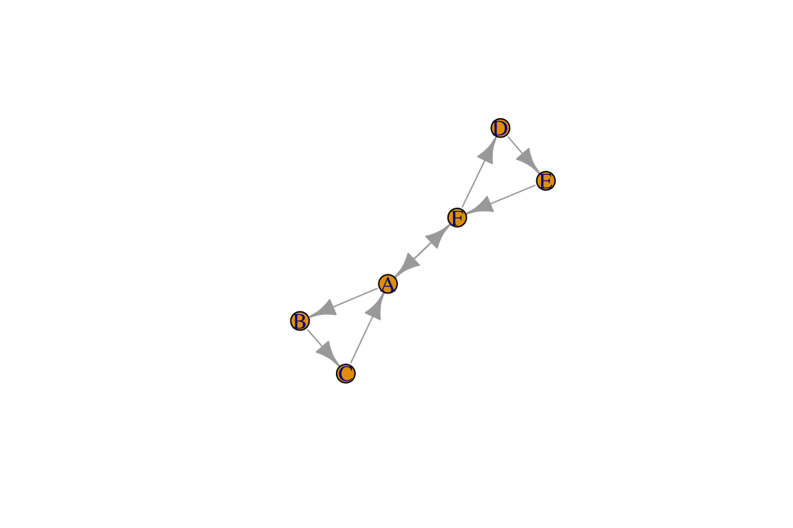
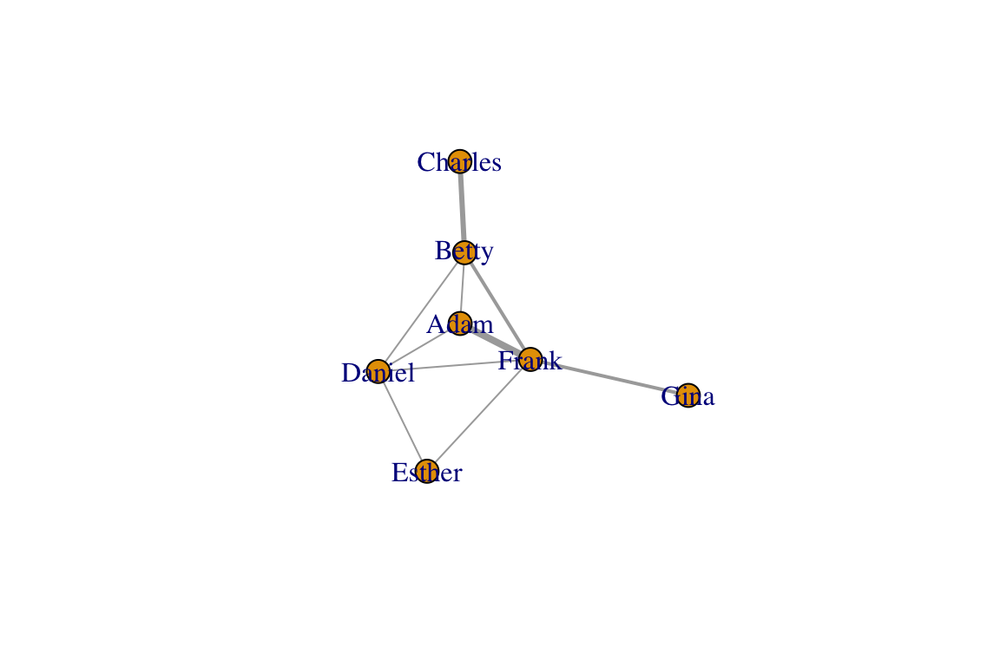
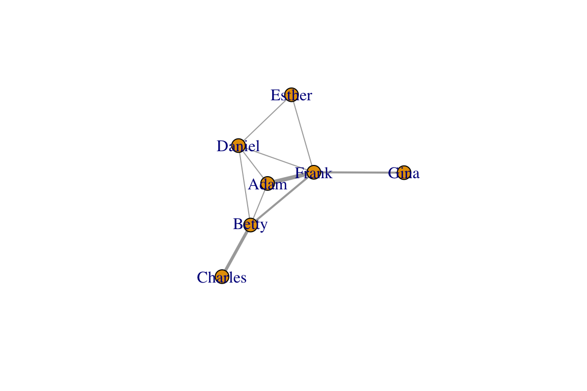

There are three basic data formats that can be used to describe networks: adjacency matrix, edge list, and adjacency list. Each format has its pros and cons. There are other variations on these (e.g., a biadjacency matrix for bipartite networks).
An adjacency matrix is a matrix in which the rows and columns represent different nodes. In an unweighted adjacency matrix, the edges (i.e., lines) are represented by 0 or 1, with indicating that these two nodes are connected. If two nodes are connected, they are said to be adjacent (hence the name, adjacency matrix). In a weighted matrix, however, you can have different values, indicating different edge qualities (or tie strengths).
Let’s start by loading the igraph package and setting up a toy network (same as in Lesson 1: Intro)
library(igraph)
g=make_graph(~A-B-C-A, D-E-F-D, A-F)
V(g)$color=c("white", "red", "green", "blue", "orange", "yellow")
E(g)$width=1:7
E(g)$color=rainbow(7)We can now extract the adjacency matrix of the network we created, called g:
as_adjacency_matrix(g, sparse=F)## A B C D E F
## A 0 1 1 0 0 1
## B 1 0 1 0 0 0
## C 1 1 0 0 0 0
## D 0 0 0 0 1 1
## E 0 0 0 1 0 1
## F 1 0 0 1 1 0Note the argument sparse=F in the code above. This displays the adjacency matrix with 0s. If sparse=T, the output is a special format of the matrix where the 0s are replaced with a period (this is to make it easier to see very large matrices).
Also note that, because the network is undirected and unweighted, the corresponding adjacency matrix is symmetrical (value for row A, column B is identical to row B, column A) and binary (values are 0 or 1).
An edge list is a two-column list of the two nodes that are connected in a network. In the case of a directed network, the convention is that the edge goes from the vertex in the first column to the vertex in the second column. In an undirected network, the order of the vertices don’t matter. For weighted networks, you may have a third column that indicates the edge weight.
You can get the edgelist of any igraph object as well:
as_edgelist(g)## [,1] [,2]
## [1,] "A" "B"
## [2,] "A" "C"
## [3,] "A" "F"
## [4,] "B" "C"
## [5,] "D" "E"
## [6,] "D" "F"
## [7,] "E" "F"An adjacency list, also known as a node list, presents the ‘focal’ node on the first column, and then all the other nodes that are connected to it (i.e., adjacent to it) as columns to the right of it. In a spreadsheet, would be a table with rows with different number of columns, which is often very awkward to deal with, like this:
| Focal Node | Neighbor_1 | Neighbor_2 | Neighbor_3 |
|---|---|---|---|
| A | B | C | F |
| B | A | C | |
| C | A | B | |
| D | E | F | |
| E | D | F | |
| F | A | D | E |
| — | — | — | — |
In R, you can display an adjacency list as an actual ‘list object’, with each item representing neighbors of each focal node:
as_adj_list(g)## $A
## + 3/6 vertices, named:
## [1] B C F
##
## $B
## + 2/6 vertices, named:
## [1] A C
##
## $C
## + 2/6 vertices, named:
## [1] A B
##
## $D
## + 2/6 vertices, named:
## [1] E F
##
## $E
## + 2/6 vertices, named:
## [1] D F
##
## $F
## + 3/6 vertices, named:
## [1] A D ELet’s consider some important aspects of data formats that come with networks that are directed or weighted. I will keep this short by listing some important things to consider, and a line of code that will display this.
Let’s create an igraph object for a directed network called dir.g. For directed networks, the adjacency matrix is not symmetrical. Rather, the cell value is 1 if the edge goes from the row vertex to the column vertex.
dir.g=make_graph(~A-+B-+C-+A, D-+E-+F-+D, A+-+F)
plot(dir.g)
as_adjacency_matrix(dir.g, sparse=F)## A B C D E F
## A 0 1 0 0 0 1
## B 0 0 1 0 0 0
## C 1 0 0 0 0 0
## D 0 0 0 0 1 0
## E 0 0 0 0 0 1
## F 1 0 0 1 0 0For directed networks with mutual edges (represented by double-edged arrows), the edge list lists both directions separately:
as_edgelist(dir.g)## [,1] [,2]
## [1,] "A" "B"
## [2,] "A" "F"
## [3,] "B" "C"
## [4,] "C" "A"
## [5,] "D" "E"
## [6,] "E" "F"
## [7,] "F" "A"
## [8,] "F" "D"You can see that, since the dir.g network object contains one mutual edge (A<->F), the edge list has 8 rows, while the edgelist for the undirected version of the network has 7 rows.
Let’s now consider what the data formats would look like. To do this, let’s go back to our original network, g. Let’s say that the edge widths that we added represent edge weights or values. Then, the adjacency matrix for this network can be shown by using the attr= argument within the function to call the adjacency matrix to specify the edge weights:
as_adjacency_matrix(g, sparse=F, attr="width")## A B C D E F
## A 0 1 2 0 0 3
## B 1 0 4 0 0 0
## C 2 4 0 0 0 0
## D 0 0 0 0 5 6
## E 0 0 0 5 0 7
## F 3 0 0 6 7 0You can display the edge weights as an edgelist as well. In fact, igraph has a convenient function that will display all of the edge attributes together as a data frame:
as_data_frame(g)## from to width color
## 1 A B 1 #FF0000FF
## 2 A C 2 #FFDB00FF
## 3 A F 3 #49FF00FF
## 4 B C 4 #00FF92FF
## 5 D E 5 #0092FFFF
## 6 D F 6 #4900FFFF
## 7 E F 7 #FF00DBFFRecall that in undirected networks, the “from” and “to” designation are arbitrary (it is simply organized in alphabetical order here).
If you want to show an edge list as a three-column matrix with the two nodes and edge weights only, you can just specify which edge attribute you want to use as the edge weight, e.g.:
as_data_frame(g)[,c("from", "to", "width")]## from to width
## 1 A B 1
## 2 A C 2
## 3 A F 3
## 4 B C 4
## 5 D E 5
## 6 D F 6
## 7 E F 7Creating a network from an edgelist that you have created is easy. First, import the .csv file called “sample_edgelist.csv”.
edge.dat=read.csv("https://dshizuka.github.io/network2018/NetworkWorkshop_SampleData/sample_edgelist.csv")
edge.dat## V1 V2 weight
## 1 Adam Betty 1
## 2 Adam Daniel 1
## 3 Adam Frank 4
## 4 Betty Charles 3
## 5 Betty Daniel 1
## 6 Betty Frank 2
## 7 Daniel Esther 1
## 8 Daniel Frank 1
## 9 Esther Frank 1
## 10 Frank Gina 2So this data frame has three columns: the first two columns are the edge list, and the third column is an edge value we called “weight”. If we have the data organized this way, we can simply use a function called graph.data.frame() to create a network we will call eg.
eg=graph_from_data_frame(edge.dat, directed=FALSE)
eg## IGRAPH UNW- 7 10 --
## + attr: name (v/c), weight (e/n)
## + edges (vertex names):
## [1] Adam --Betty Adam --Daniel Adam --Frank Betty --Charles
## [5] Betty --Daniel Betty --Frank Daniel--Esther Daniel--Frank
## [9] Esther--Frank Frank --Ginaplot(eg, edge.width=E(eg)$weight)
Importing an adjacency matrix written in .csv format is just slightly trickier. This is because you want R to know that first row is a header AND the first row contains row names rather than data. You also want R to recognize this data as a “matrix object”. We can use just one line of code to do this:
am=as.matrix(read.csv("https://dshizuka.github.io/network2018/NetworkWorkshop_SampleData/sample_adjmatrix.csv", header=T, row.names=1))
am## Adam Betty Charles Daniel Esther Frank Gina
## Adam 0 1 0 1 0 4 0
## Betty 1 0 3 1 0 2 0
## Charles 0 3 0 0 0 0 0
## Daniel 1 1 0 0 1 1 0
## Esther 0 0 0 1 0 1 0
## Frank 4 2 0 1 1 0 2
## Gina 0 0 0 0 0 2 0Now we have our adjacency matrix, and we are ready to convert this into an igraph object! Note that this is a weighted adjacency matrix. Note that we are going to add an argument weighted=T to indicate that the edges have weights. The results from the code below should look the same as above.
ag=graph_from_adjacency_matrix(am, mode="undirected", weighted=T)
plot(ag, edge.width=E(ag)$weight)